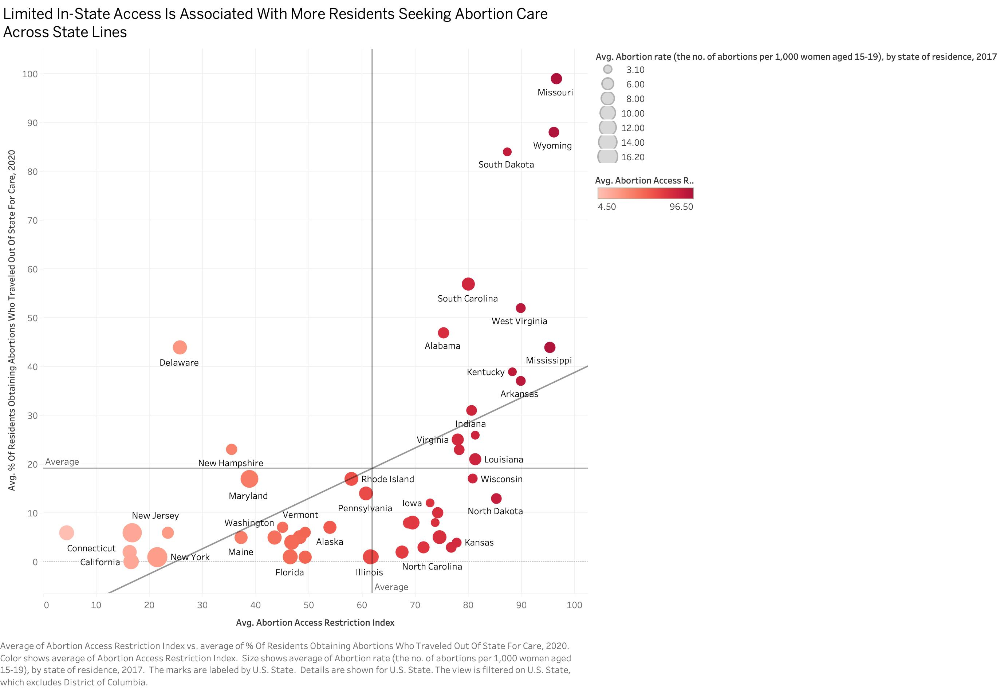
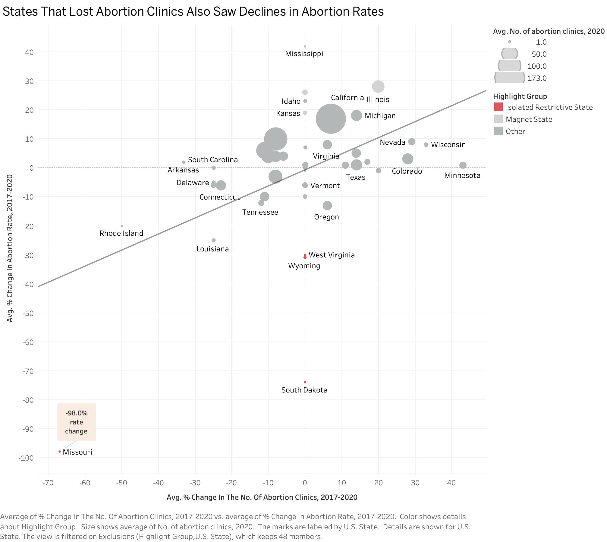

Proposition: Restricting abortion access doesn't reduce abortions, it just forces women to travel out of state for care.
FOR the Proposition

Design Decisions and Rationale:
- Creating a Composite “Abortion Access Restriction Index” (Score: +1)
To capture abortion access restrictions in a single measure, I built a composite index by averaging four variables: the percentage of counties without a known abortion provider, the percentage of counties without a known clinic, and the percentage of women aged 15–44 living in counties without a clinic or provider. This design choice is persuasive because it reduces complexity. Instead of evaluating four separate measures of access, viewers see one summary value that communicates how restricted abortion access is in each state. However, the score is not a full +2 because the choice of variables used in the index reflects a subjective framing decision. By emphasizing geographic access measures rather than legal restrictions or policy variables, the index frames abortion restrictions primarily as an issue of provider and clinic availability, which aligns with the proposition’s argument that limited local access leads residents to seek care in other states.
- Using a Scatter Plot to Show the Relationship Between Access and Travel (Score: +2)
A scatter plot was used to show the relationship between the restriction index and the percentage of residents who traveled out of state for care. Each dot is one state, which lets viewers see the pattern across all 50 states at once rather than focusing on a handful of examples. The scatter plot is persuasive here because the upward trend from left to right tells the proposition's story in the most direct visual form possible. As the restriction index rises, the travel rate rises with it. Missouri (restriction index ~97, travel rate 99%) and Wyoming (88%) sit in the top right and support the argument as extreme cases.
- Adding Quadrant Reference Lines at the Average Values (Score: +1)
Reference lines were added at the average values of both axes, dividing the chart into four quadrants. This gives viewers a concrete benchmark. States in the upper-right quadrant have above-average restriction levels and above-average travel rates simultaneously. This is persuasive because it makes the clustering of restrictive states in the upper-right quadrant obvious without requiring the viewer to do any mental math. The quadrant structure essentially does the interpretive work for them. The choice is mostly earnest because the averages are computed directly from the data. The slight caveat is that average is a somewhat arbitrary threshold. Using the median instead would shift the lines and change which states fall in each quadrant.
- Encoding Restriction Level Using a Red Color Gradient (Score: +0.5)
Color redundantly encodes the same restriction index as the x-axis, states further right are also darker red. Redundant encoding reinforces the pattern by giving the viewer two simultaneous visual cues pointing to the same conclusion. The red gradient carries connotative weight that goes slightly beyond neutral representation. Darker red reads as "more alarming" or "more severe," which nudges the viewer toward a negative association with high-restriction states. The gradient accurately reflects the underlying data, but the color choice itself is a persuasive decision. The score reflects that while the encoding is accurate, the choice of red specifically (rather than a neutral palette like blue or gray) adds an emotional dimension that serves the proposition's framing.
AGAINST the Proposition

Design Decisions and Rationale:
- Using Percent Change in Clinics vs. Percent Change in Abortion Rate (Score: -1)
Both axes use percentage change rather than absolute values. Missouri's abortion rate dropped from roughly 5/1,000 to 0.1/1,000, a -98% change, which places it dramatically in the lower-left of the chart. On an absolute scale that same change is about -5 points, which is significant but not visually extreme compared to higher-baseline states.
- Adding a Linear Trendline (Score: +1)
A linear trendline was added to summarize the overall relationship between the two variables. The trendline visually emphasizes the positive relationship between changes in clinic numbers and abortion rates, making the pattern easier for viewers to interpret. While the trendline simplifies complex variation between states, it helps communicate the broader trend suggested by the data.
- Highlighting “Isolated Restrictive States” (Score: -0.5)
Missouri, Wyoming, South Dakota, and West Virginia are colored red and explicitly labeled. Some of these states show 0% change in clinic count because they already had very limited clinic availability, meaning access constraints persisted even without additional clinic closures. This is actually a more deceptive framing than it first appears. Having these states at x=0 makes them look like they held steady on the clinic axis, when the reality is they had nowhere left to fall. Their abortion rate declines happened despite no further clinic loss, which complicates the fewer clinics = fewer abortions argument the chart is trying to make.
- De-emphasizing Magnet States (Score: -1.5)
Kansas, Illinois, and New Mexico, states whose occurrence rates rose well above their residence rates as they absorbed patients from restrictive neighbors, are rendered in light gray and left unannotated. The data is still there, just visually pushed to the background. This is the most deceptive choice. Kansas gained 7.2 abortions per 1,000 women over its residence rate, Illinois gained 4.2. Those numbers are direct evidence for the proposition in Visualization 1. They show demand flowing to neighboring states rather than disappearing. Making those dots recede means a casual viewer is unlikely to notice the strongest counterevidence to this chart's argument. I considered removing these states entirely with a filter note. Keeping them in gray is more defensible than full exclusion because the data is technically still present, even if the visual effect for a casual reader is nearly the same.
- Encoding Clinic Counts Using Circle Size (Score: +1.5)
Circle size represents the number of abortion clinics in 2020. This adds a third dimension of information, states with more clinics appear as larger circles, which helps viewers understand the scale of each state's abortion infrastructure in the context of the changes shown on the axes. The size encoding subtly reinforces the isolated states narrative. Missouri, South Dakota, and Wyoming are not only in the lower quadrant towards the left but are also visually tiny, they barely register as having any infrastructure. The choice is earnest because the encoding accurately reflects real clinic counts. The slight deduction is for the fact that it was chosen partly because the small dot in the lower-left serves the visual argument.
Final Reflection
Designing two persuasive visualizations from the same dataset demonstrated how strongly visualization choices can shape interpretation. The dataset contained multiple variables related to abortion providers, clinic availability, and abortion rates, which made it possible to frame different narratives about abortion access. In the first visualization, I emphasized interstate travel and geographic access barriers by highlighting states where residents frequently obtain abortions out of state. In contrast, the second visualization focused on changes in the number of clinics and corresponding changes in abortion rates between 2017 and 2020. Neither chart fabricates anything, both are just selecting what to show. That's what made this exercise a little uncomfortable, the designer speaks through the data, and the reader receives that framing whether or not they realize it. By selecting different variables and visual encodings, each visualization highlighted a different aspect of the data and supported opposing interpretations of the same underlying dataset.
What I didn't expect was that the deceptive choices were actually the hardest to execute well. Obvious manipulations like truncating an axis or flipping a scale tend to backfire the moment a careful reader notices them. The subtler moves such as using percent change instead of absolute values or rendering magnet states in gray instead of removing them required actually understanding the data well enough to know what would be persuasive without being immediately detectable. Some decisions that felt deceptive at first, like the composite restriction index, turned out to be defensible. Others that felt neutral, like excluding Oklahoma as an outlier, turned out to be quietly convenient. That blurriness is the point. Ethical visualization isn't really about whether you're lying since every design choice shapes what a reader concludes, and none of those choices are fully neutral. The more honest standard is transparency: can an attentive reader recover the full picture from what you've shown them? By that measure, de-emphasizing the magnet states in Visualization 2 sits closest to the line. The data is technically present, but the design makes it very easy to miss.